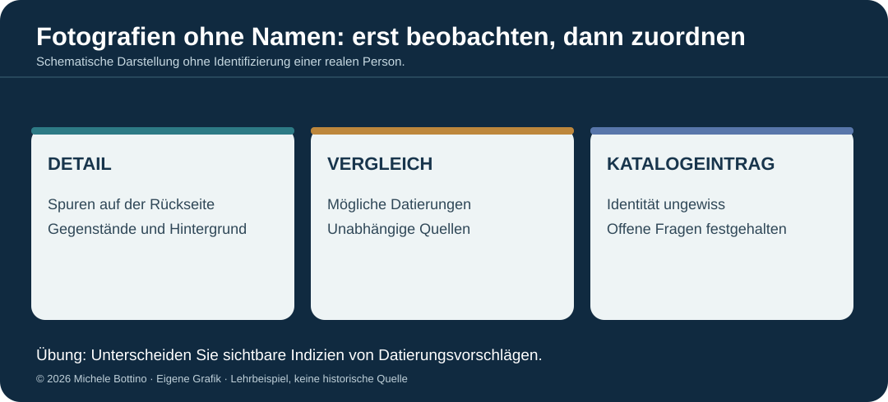

Fotografien ohne Namen
Sechs Einheiten mit achtzehn Lektionen zeigen, wie Sie Fotografien in ihrem Zusammenhang beschreiben und Indizien, Vermutungen und Belege unterscheiden.
Kursvorschau in Überarbeitung. Kostenloses Material zum Selbststudium. Der Kurs befindet sich in Entwicklung und wurde noch nicht mit Teilnehmenden erprobt und validiert. Es gibt keine Anmeldung, persönliche Beurteilung oder Bescheinigung. Die simulierten Übungen dokumentieren keine wirklichen Ereignisse.

Einheit 1 von 6 · Material in Überarbeitung
Beim Fund: Ordnung und Herkunft festhalten
Lernziel: Vor der Deutung des Bildinhalts dokumentieren, wie die Fotografie beschaffen ist und wer sie verwahrt hat.
1.1 Der Fundzusammenhang
Halten Sie fest, wer das Bild aufbewahrte, wo es lag und welche Gegenstände oder Dokumente sich in der Nähe befanden. Der berichtete Fundort muss erst überprüft werden. Aus ihm ergeben sich weder Aufnahmeort noch Aufnahmedatum.
1.2 Physische Merkmale
Vermerken Sie Format, Trägermaterial, Ränder, Beschriftungen, etwaige Nummern auf der Rückseite und den Erhaltungszustand. Lassen Sie das Original unberührt. Kennzeichnen Sie unsichere Lesarten.
1.3 Kopien und Bearbeitungen dokumentieren
Vergeben Sie eine dauerhafte Kennung. Dokumentieren Sie jeden Kopier- oder Digitalisierungsschritt und bewahren Sie Originalbild und Bearbeitungen getrennt auf. Ein digitaler Fingerabdruck belegt die Unverändertheit einer Datei, nicht die historische Echtheit der Szene.
Angeleitete Übung
Erstellen Sie einen Eintrag zu einer Fotografie unklarer Herkunft. Nennen Sie Kennung und überlieferte Verwahrperson, beschreiben Sie Vorder- und Rückseite und formulieren Sie drei Forschungsfragen. Kennzeichnen Sie ein erfundenes Beispiel ausdrücklich.
Bearbeiten Sie die Aufgabe auf Ihrem Gerät. Die Website erfasst Ihre Arbeit nicht.Selbstkontrolle
Ihre Auswahl wird nicht gespeichert und stellt keine Bewertung dar.
Einheit 2 von 6 · Material in Überarbeitung
Was ist auf dem Bild tatsächlich zu sehen?
Lernziel: Vor der Hypothesenbildung eine neutrale Beschreibung verfassen.
2.1 Erste Ebene: sichtbare Merkmale
Beschreiben Sie Anzahl und Anordnung der Personen, Gegenstände und lesbaren Text. Vermeiden Sie Begriffe, die unbestätigte Berufe, Verwandtschaftsverhältnisse oder Umstände voraussetzen.
2.2 Zweite Ebene: überlieferte Angaben
Halten Sie die Angaben der Person, die die Fotografie übergibt, gesondert fest. Notieren Sie Namen, Datum und Umstände der Aussage und schützen Sie dabei die Privatsphäre.
2.3 Dritte Ebene: Deutungen
Formulieren Sie mehrere plausible Deutungen. Eine Uniform kann auf ein bestimmtes Umfeld hinweisen. Allein belegt sie weder Funktion noch Dienstgrad oder Identität.
Angeleitete Übung
Schreiben Sie zum selben Bild drei kurze Absätze mit den Überschriften BEOBACHTET, BERICHTET und VERMUTET. Markieren Sie zwei Wörter, die eine Vermutung als Tatsache erscheinen lassen könnten.
Bearbeiten Sie die Aufgabe auf Ihrem Gerät. Die Website erfasst Ihre Arbeit nicht.Selbstkontrolle
Ihre Auswahl wird nicht gespeichert und stellt keine Bewertung dar.
Einheit 3 von 6 · Material in Überarbeitung
Datierung anhand begründeter Zeitspannen
Lernziel: Zeitliche Grenzen begründen und verbleibende Unsicherheiten erhalten.
3.1 Aufnahme- und Abzugsdatum
Ein Abzug kann viele Jahre nach der Aufnahme entstanden sein. Vermerken Sie Aufnahme, Herstellung des Abzugs und Übernahme ins Archiv mit getrennten Datumsangaben.
3.2 Indizien und Datierungsgrenzen
Vergleichen Sie Aufschriften, Stempel, Verfahren und Kontext mit datierten Belegen. Unterscheiden Sie frühestes und spätestes mögliches Datum. Prüfen Sie, ob ein Datum auf der Rückseite tatsächlich die Aufnahme bezeichnet.
3.3 Zeitspannen und Widersprüche
Wenn Indizien auseinandergehen, geben Sie eine vorsichtige Zeitspanne an und begründen Sie die konkurrierenden Deutungen. Verzichten Sie auf unbelegte Jahreszahlen.
Angeleitete Übung
Vergleichen Sie in einem ausdrücklich fiktiven Beispiel einen Stempel „1954“, einen auf 1971 datierten Nachdruck laut Angabe und die Erinnerung „Anfang der fünfziger Jahre“. Begründen Sie eine Zeitspanne, ohne die drei Angaben zu vermengen.
Bearbeiten Sie die Aufgabe auf Ihrem Gerät. Die Website erfasst Ihre Arbeit nicht.Selbstkontrolle
Ihre Auswahl wird nicht gespeichert und stellt keine Bewertung dar.
Einheit 4 von 6 · Material in Überarbeitung
Orte, Kleidung, Gegenstände und Quellen abgleichen
Lernziel: Fotografische Indizien mit unabhängigen Belegen vergleichen.
4.1 Von der Ähnlichkeit zum Beleg
Ein ähnlich wirkendes Gebäude oder Kleidungsstück reicht zur Orts- oder Zeitbestimmung nicht aus. Notieren Sie die verglichenen Merkmale und die Unterschiede.
4.2 Unabhängige Belege
Drei Websites, die dieselbe Bildunterschrift übernehmen, bilden eine einzige Überlieferungskette. Suchen Sie unabhängige Verzeichnisse, Karten oder Fotografien und nennen Sie Herkunft und Datum jeder Quelle.
4.3 Eine Vergleichstabelle
Notieren Sie für jede Aussage Indiz, Quelle, Grad der Übereinstimmung, eine mögliche andere Erklärung und die noch erforderliche Prüfung.
Angeleitete Übung
Erstellen Sie eine Tabelle mit drei möglichen Hinweisen auf den Ort. Fügen Sie mindestens eine unabhängige Quelle hinzu oder vermerken Sie ausdrücklich, dass keine vorliegt.
Bearbeiten Sie die Aufgabe auf Ihrem Gerät. Die Website erfasst Ihre Arbeit nicht.Selbstkontrolle
Ihre Auswahl wird nicht gespeichert und stellt keine Bewertung dar.
Einheit 5 von 6 · Material in Überarbeitung
Mögliche Namen und unbestätigte Identitäten
Lernziel: Vorgeschlagene Identifizierungen prüfen und unbelegte Zuschreibungen vermeiden.
5.1 Wiedererkennen und Identität feststellen
Eine Ähnlichkeit im Gesicht, eine spätere Bildunterschrift und eine Familienerzählung sind unterschiedliche Arten von Indizien. Keines allein sichert die Identität.
5.2 Namensvorschläge dokumentieren
Halten Sie zu jedem Namen fest, wer ihn wann vorgeschlagen hat, worauf die unmittelbare Kenntnis der Person beruht und welche Dokumente die Zuschreibung stützen oder ihr widersprechen.
5.3 Personen und ihre Rechte
Veröffentlichen Sie keine persönlichen Daten, intimen Einzelheiten oder ungeprüften Zuschreibungen. Wenn lebende Personen betroffen sind, prüfen Sie Einwilligung, Notwendigkeit und Form der Veröffentlichung.
Angeleitete Übung
Erfinden Sie für eine unbekannte Person zwei ausdrücklich hypothetische Zuschreibungen. Verfassen Sie dann eine veröffentlichungsfähige Bildunterschrift, die keinen der Namen als gesichert ausgibt.
Bearbeiten Sie die Aufgabe auf Ihrem Gerät. Die Website erfasst Ihre Arbeit nicht.Selbstkontrolle
Ihre Auswahl wird nicht gespeichert und stellt keine Bewertung dar.
Einheit 6 von 6 · Material in Überarbeitung
Der fertige Atlas: 12 Einträge und ein Verzeichnis offener Fragen
Lernziel: Einen benutzbaren Atlas erstellen, in dem Belege, Vermutungen und Lücken unterscheidbar bleiben.
6.1 Den Atlas gliedern
Erstellen Sie zwölf Einträge mit Kennung, Beschreibung, Herkunft, Datierungsvorschlag, Quellen und Stand der Identifizierung. Bei weniger Fotos kennzeichnen Sie den Entwurf als unvollständigen Prototyp.
6.2 Offene Fragen und Fassungen
Vergeben Sie für jede offene Frage eine Kennung. Dokumentieren Sie Aktualisierungen, Überarbeitungen und neu hinzugekommene Quellen. Halten Sie auch fest, was Sie aus welchem Grund verworfen haben.
6.3 Prüfung und Veröffentlichung
Prüfen Sie Lesbarkeit, Bildunterschriften, Bildrechte und den Schutz der abgebildeten Personen. Für eine externe Durchsicht muss eine andere Person die Arbeit prüfen. Die eigene Checkliste ersetzt das nicht.
Angeleitete Übung
Erstellen Sie eine Vorlage für zwölf Einträge. Füllen Sie mindestens einen mit einem ausdrücklich fiktiven Beispiel aus. Ergänzen Sie fünf offene Fragen mit möglichen künftigen Prüfungen.
Bearbeiten Sie die Aufgabe auf Ihrem Gerät. Die Website erfasst Ihre Arbeit nicht.Selbstkontrolle
Ihre Auswahl wird nicht gespeichert und stellt keine Bewertung dar.
Eine echte Fotografie: ergänzende Übung
Öffnen Sie die interaktive Fotowerkstatt. Sie verwendet ein Porträt von Mary Church Terrell aus der Library of Congress. Die Identität der Porträtierten ist bereits im Katalog verzeichnet. Die Übung gilt der unsicheren Datierung.